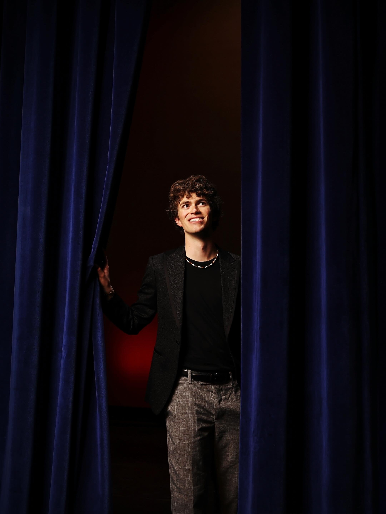

About Me
OWEN JEFFERIES
Creator and host of The Owenverse, a self-help podcast built around vulnerable conversations, real experiences, and the lessons that can change people's lives.

The Person Behind the Mic
Drawn to people and the stories behind who they are.
With a background in performing arts, marketing, photography, videography, and storytelling, Owen has always been drawn to people and the stories behind who they are. He has visited 13 countries and performed in over a dozen leading roles in theatre throughout the state of Utah.
At 18 years old, Owen launched The Owenverse from his home studio in Salt Lake City, Utah. The first episode aired on February 9, 2026.
Why The Owenverse Exists
The idea came from conversations Owen had with people throughout his life. Someone would share advice, an experience, or a perspective that made him wonder if anyone else had heard what was just said.
“I wish more people could hear this. This could change someone's life.”
That thought became The Owenverse: Owen's universe of conversations, experiences, and people he has encountered, and those he has yet to meet.
The Invitation
Vulnerable people. Useful perspective.
The purpose isn't simply to introduce the world to interesting people. It's to put vulnerable people behind the mic who are willing to share what they've lived through so someone else can learn from it.
You'll hear from people with niche accomplishments, major life decisions, personal struggles, addictions, ambitions, and experiences. The goal is to help prepare you for obstacles you may encounter in your own life, because someone behind the mic may have faced something you're facing now, overcome something you're struggling with, or achieved a dream you've wondered if you could reach yourself.
The Owenverse
Welcome to this little corner of my universe.
The show is available on Spotify, Apple Podcasts, and YouTube.
Listen and Watch Episodes